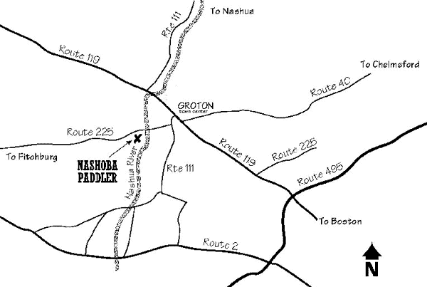

DIRECTIONS TO NASHOBA PADDLER
Mapquest 398 West Main Street, Groton, MA
GO GREEN! Bike from Boston or Fitchburg (using the train)!
The Fitchburg/ South Acton train allows bicycles except during peak hours. From the train station in Ayer, cross Main Street and hop onto the Nashua River Rail Trail. Travel 2.75 miles to the third road intersection (Broadmeadow Rd). Turn left onto Broadmeadow Rd. and continue until it ends (.5mi), Turn right onto Farmer's Row (0.1mi) and left onto Long Hill Rd/ Rt 225 (0.8mi). Enjoy the ride downhill! After crossing the Nashua River, the road becomes West Main St/ Rt 225. Nashoba Paddler will be on your left.
From Rte. 495
Take the Littleton/Groton Exit 31 onto Rte 119W. Travel west towards Groton for 10 minutes to Groton center. In the center of Groton, turn left at a green sign on the left that says 111-225. After a half mile Rte. 225 breaks off to the right. Take that right and go a mile down the hill. Immediately after you cross over the Nashua River you'll see Nashoba Paddler on the left. Look for our red sign.
From Boston
Take Route 2 West and follow for 1/2 hour to the Concord rotary. At the rotary take the 2nd outlet on 2A towards Littleton. Follow straight thru Acton and Littleton. 2A turns into 119 as you go over Rte. 495. After crossing 495 go west for 10 minutes to Groton center. In the center of Groton, turn left at a green sign on the left that says 111-225. After a half mile Rte. 225 breaks off to the right. Take that right and go a mile down the hill. Immediately after you cross over the Nashua River you'll see Nashoba Paddler on the left. Look for our red sign.
From Fitchburg/Leominster (from Route 2A)
Take Route 2A thru Lunenberg and follow for another 5 minutes or so until you reach the sign for Route 225/Groton, on the left. Turn left there and follow 225 for a few minutes until you reach a stop sign just after crossing a small river (the Squannacook). (You'll be in W. Groton center.) At the stop sign bear right and follow 225 for 1 mile. Nashoba Paddler is on the right just after the Groton Nursery. Look for our red sign.
From Worcester/Route 2 coming from the West
Take the Shirley exit and turn north towards Shirley. Follow for 2 miles to stop sign. Bear right at stop sign and then take an immediate left over the railroad tracks. Follow that road for 2 miles to historic Shirley center (just a green). There is one fork in the road before the stop sign. Take the left fork and then turn left at the stop sign. Follow that road for 1 mile until it comes to a stop sign (a T at the intersection of 2A). Turn right at the stop sign and an immediately left just past the Bull Run restuarant onto Longley Rd. Follow for 1 mile to stop sign. Turn right at the stop sign onto Rte. 225 and follow until the next stop sign just after crossing a small river (the Squannacook). (You'll be in W. Groton center.) At the stop sign bear right and follow 225 for 1 mile. Nashoba Paddler is on the right just after the Groton Nursery. Look for our red sign.

Nashoba Paddler, LLC
978-448-8699
LOCATION: 398 West Main St. (Rt. 225), Groton, Ma
MAILING ADDRESS: PO Box 228, West Groton, Ma 01472
All rights reserved, Nashoba Paddler, LLC 2013 ©